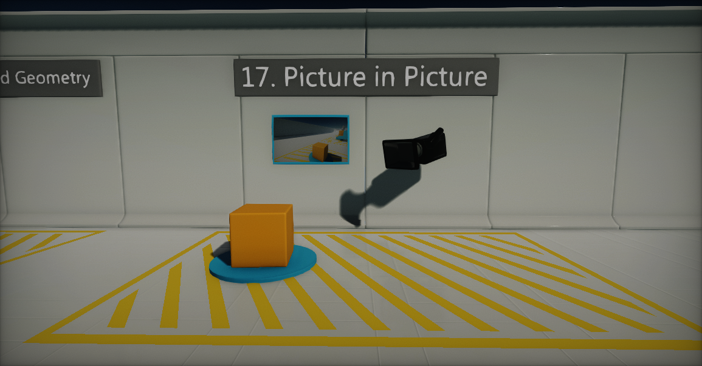
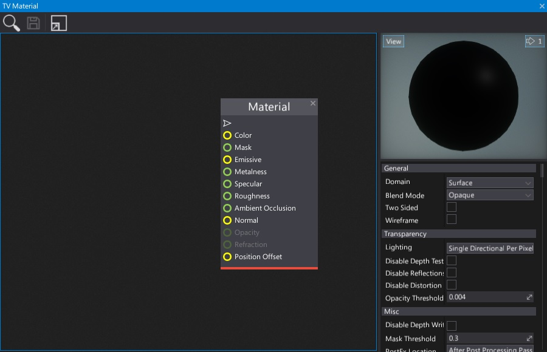
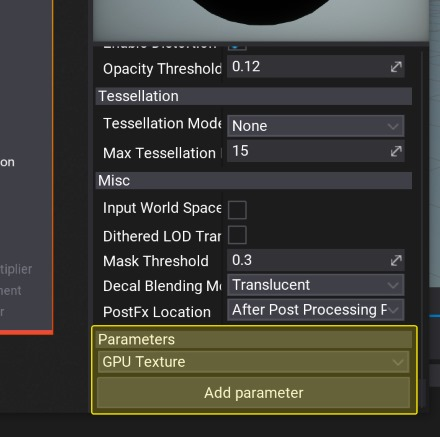
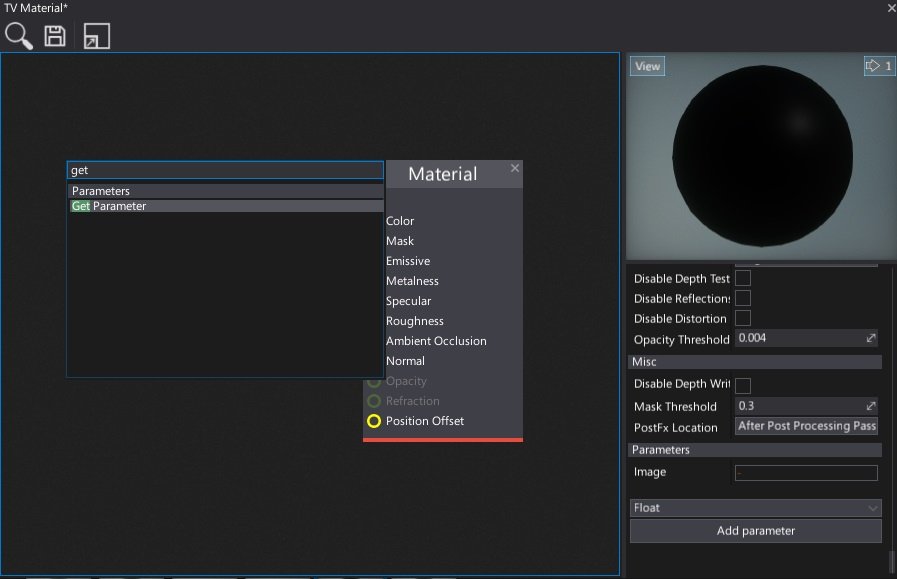
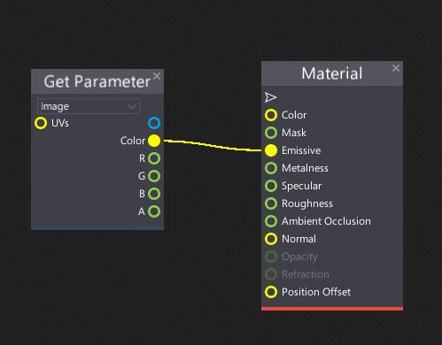
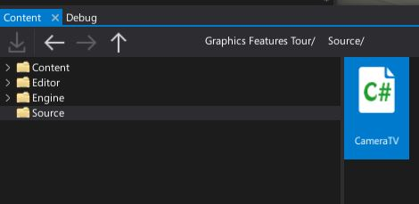
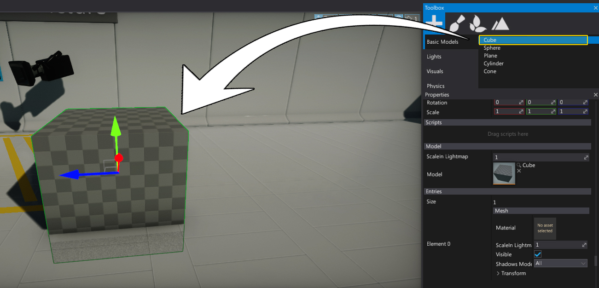
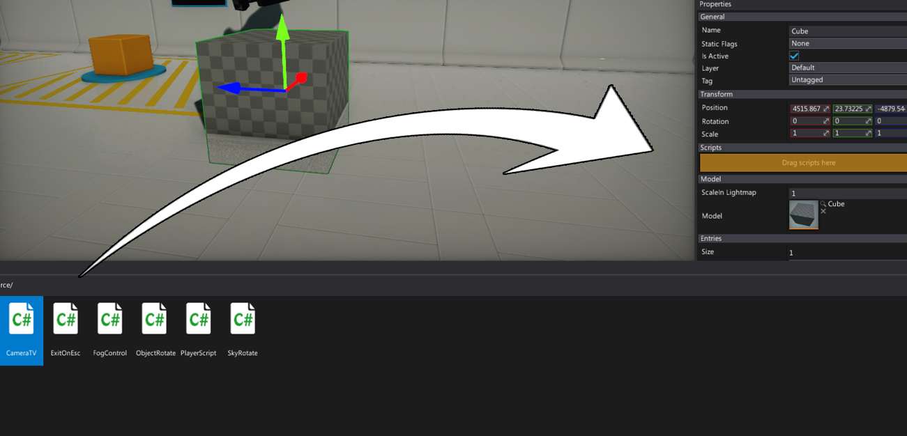
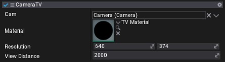
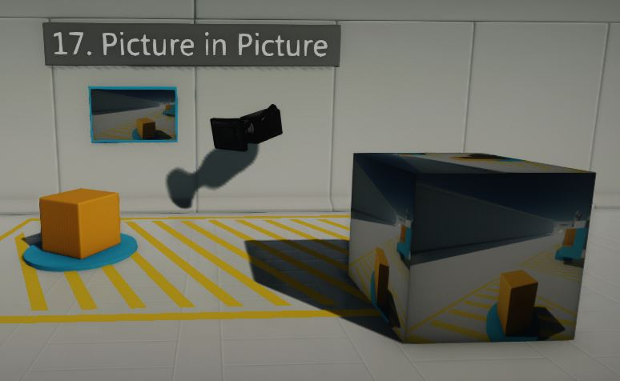

HOWTO: Render a camera to a texture
Flax Engine offers very wide range of customization that can be made to extend the rendering pipeline. One of them is rendering scene using the custom camera right to the render target. Then presenting it on an object surface.
In this tutorial you will learn how to achive picture-in-picture effect:

Creating material
The first step is to create a dedicated material for the TV object. It will be used to show rendered scane picture on a surface so player could see it. To do that follow these simple steps:
Create new empty material, and name it
TV Material(see Materials Basics page to learn how to do it)Open it in Material Editor (double-click on an asset) 
Scroll down the Properties Panel, select GPU Texture option from the bottom drop down menu and press Add parameter button
Right-click on created New parameter, select option Rename and set its name to Image
Right-click on a Surface background and create Get Parameter node (to learn more about creating nodes see Material Editor page) 
Select Image parameter from the dropdown menu of that node and connect it's Color box with Material Emissive input.
Save the material asset
Creating a script
Now it's time to write a simple script that will use a camera and render it to the texture (which is also called a render target).
Navigate to Source/Game directory of your project and create new C# script with name CameraTV 
Open the script
Write the following code and save it
using System;
using FlaxEngine;
public class CameraTV : Script
{
public Camera Cam;
public MaterialBase Material;
[Limit(1, 2000)]
public Vector2 Resolution
{
get => _resolution;
set
{
value = Vector2.Clamp(value, new Vector2(1), new Vector2(2000));
if (_resolution != value)
{
_resolution = value;
if (_output)
{
// Resize backbuffer
UpdateOutput();
}
}
}
}
public float ViewDistance = 2000;
private Vector2 _resolution = new Vector2(640, 374);
private GPUTexture _output;
private SceneRenderTask _task;
private MaterialInstance _material;
private void UpdateOutput()
{
var desc = GPUTextureDescription.New2D(
(int)_resolution.X,
(int)_resolution.Y,
PixelFormat.R8G8B8A8_UNorm);
_output.Init(ref desc);
}
public override void OnEnable()
{
// Create backbuffer
if (_output == null)
_output = new GPUTexture();
UpdateOutput();
// Create rendering task
if (_task == null)
_task = new SceneRenderTask();
_task.Order = -100;
_task.Camera = Cam;
_task.Output = _output;
_task.ViewFlags = ViewFlags.Reflections | ViewFlags.Decals | ViewFlags.AO | ViewFlags.GI | ViewFlags.DirectionalLights | ViewFlags.PointLights | ViewFlags.SpotLights | ViewFlags.SkyLights | ViewFlags.Shadows | ViewFlags.SpecularLight | ViewFlags.CustomPostProcess | ViewFlags.ToneMapping;
_task.Enabled = false;
if (Material && _material == null)
{
// Use dynamic material instance
if (Material.WaitForLoaded())
throw new Exception("Failed to load material.");
_material = Material.CreateVirtualInstance();
// Set render task output to draw on model
_material.SetParameterValue("Image", _output);
// Bind material to parent model
if (Actor is StaticModel staticModel && staticModel.Model)
{
staticModel.Model.WaitForLoaded();
staticModel.SetMaterial(0, _material);
}
}
_task.Enabled = true;
}
public override void OnUpdate()
{
_task.Enabled = Vector3.Distance(Actor.Position, MainRenderTask.Instance.View.Position) <= ViewDistance;
}
public override void OnDisable()
{
// Unbind temporary material
if (Actor is StaticModel staticModel && staticModel.Model && staticModel.Model.IsLoaded)
staticModel.SetMaterial(0, Material);
// Ensure to cleanup resources
Destroy(ref _task);
Destroy(ref _output);
Destroy(ref _material);
}
}
Preparing objects
The final step is to set up a scene and link all this stuff together.
- Create new Camera object and place it in your scene
Add object that will present a camera image. You can use Cube model from the Toolbox window 
Select spawned object and add CameraTV script to it by simply draging it 
Set reference to the camera and material for script properties Cam and Material. You can also adjust the resolution (in pixels).
Hit Play and see the results! 